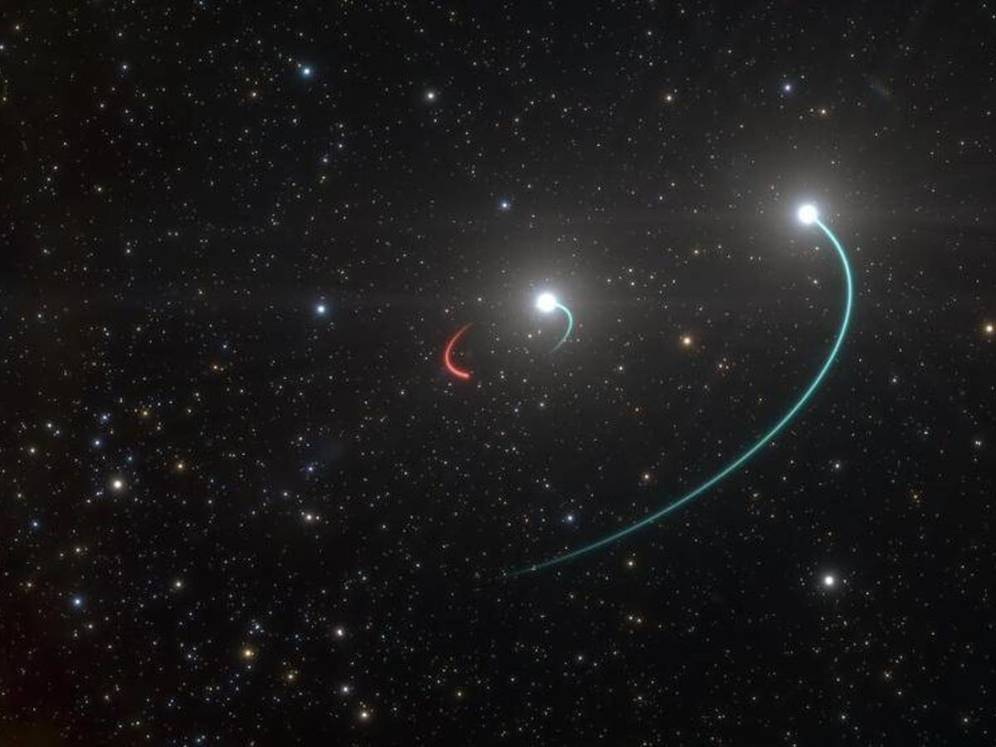
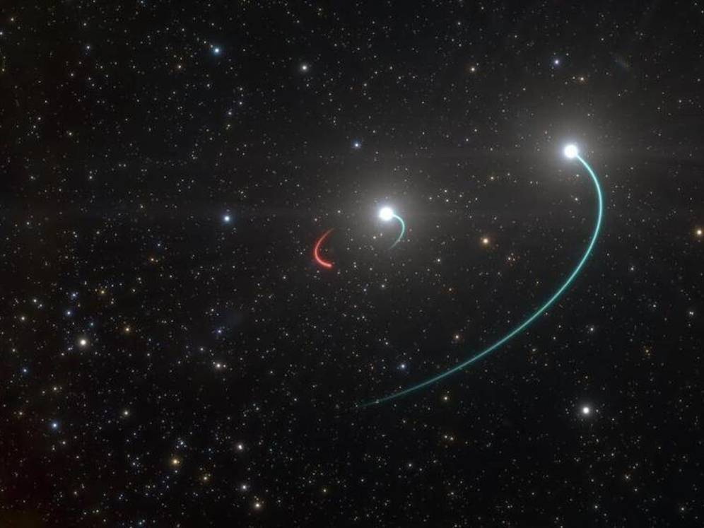

Sabores de la terreta
Menús
Menú 1
-


Eclipse lunar: Coca dos quesos -


Amanecer marino: Arroz mar y montaña. -
Delicia venusina: Sorbete de sandía.
Menú 2
-


Cinturón de asteroides: Coca vegetal rodeada de tierra de chocolate. -
Llamarada solar: Sopa de calabaza con picada de almendras y nata. -
Vía Láctea: Semifreddo de leche merengada y horchata con pléyade de muesli, frutos silvestres y reducción de naranja.
Menú 3
-
Órbita:
Magret de pato con cacahuetes y reducción de arrop. -
Materia oscura: Calamares en su propia tinta. -

Nitrógeno cítrico: Postre cítrico con helado de pistacho.
 

Cada mes ofrecemos tres menús diferentes por 24,60€.
El menú no incluye pan, bebida ni café/infusión.Carta
Todos los platos se pueden pedir también a la carta para hacer la combinación que tú quieras.
Cada mes actualizamos el listado con los nuevos platos.
- Eclipse lunar:
- Coca cuatro quesos 11,50€.
- Amanecer marino:
- Arroz mar y montaña 14,30€.
- Delicia venusina:
- Sorbete de sandía 4,50€.
- Cinturón de asteroides:
- Coca vegetal rodeada de tierra de chocolate 11,20€.
- Llamarada solar:
- Sopa de calabaza con picada de almendras y nata 13,10€.
- Vía Láctea:
- Semifreddo de leche merengada y horchata con pléyade de muesli y frutos silvestres y reducción de naranja 6,60€.
- Órbita:
- Magret de pato con cacahuetes y reducción de arrop 12,40€.
- Materia oscura:
- Calamares en su propia tinta 13,90€.
- Nitrógeno cítrico:
- Postre cítrico con helado de pistacho 5,20€.